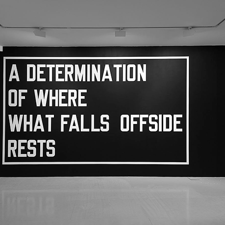
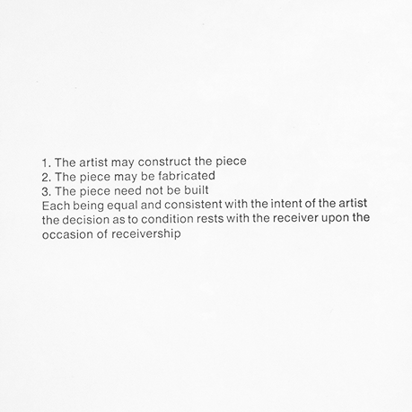
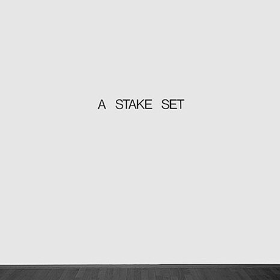
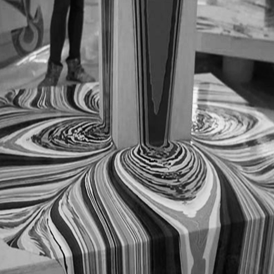
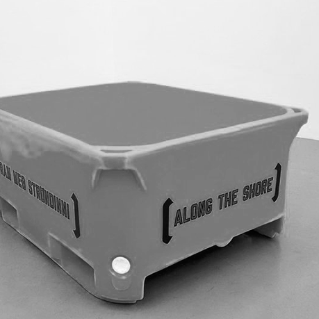
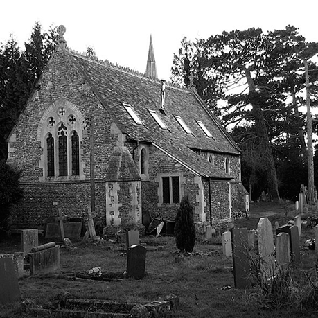
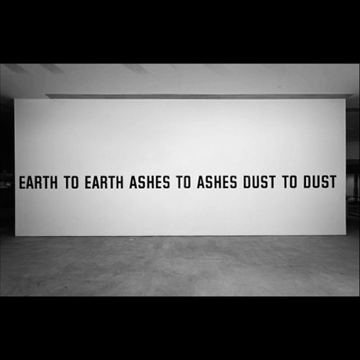

Lawrence Weiner is a sculptor whose medium is language. His texts describe material processes and physical conditions; they delineate space and indicate location. Since 1968, when he concluded that the actual construction of a work was not critical to its existence in the world, Weiner has authored hundreds of linguistic artworks1.Prior to this time, his material sculptures had been prefaced by titles that dictated the means of their fabrication. When the outdoor installation was damaged, Weiner realized that the essence of a work is textual and not physical. This led him to the following formulation, first published in 1968, which continues to outline his conceptual approach to artmaking: “The artist may construct the piece. (2) The piece may be fabricated. (3) The piece need not be built. Each being equal and consistent with the intent of artist, the decision as to condition rests with the receiver upon the occasion of receivership.”2
In a radical restructuring of the traditional artist/viewer relationship, Weiner shifted the responsibility of the work’s realization to its audience, while also redefining standard systems of artistic distribution. A work such as A STAKE SET3 (1969) can be made or merely spelled out on a museum wall, but it can also be read in a book or heard if uttered aloud. Weiner’s art can literally be disseminated by word of mouth. Much of the early work rehearses simple actions involving basic substances—pouring paint4, digging trenches5, removing plaster—and, like all subsequent examples, are stated in the past tense to avoid the authoritative tone of a command. Others are more spectacular, involving firecrackers and dynamite. THE RESIDUE OF A FLARE IGNITED UPON A BOUNDARY6(1969), a piece that Weiner actually executed in Amsterdam for the Stedelijk Museum’s7 pivotal 1969 Conceptual art exhibition Op Losse Schroeven: Situaties en Cryptostructuren (Square Pegs in Round Holes: Structures and Cryptostructures), is poetic in its ability to evoke vivid imagery, while at the time suggesting coded systems of communication. Weiner gradually extended his engagement with language to ready-made structures8, such as idioms, clichés, and proverbs, which underscore the contingent nature of meaning when encountered in different contexts. The Christian burial9 recitation “Earth to Earth, Ashes to Ashes, Dust to Dust” becomes, in nonliturgical circumstances, a simple meditation on materials and processes of transmutation (EARTH TO EARTH ASHES TO ASHES DUST TO DUST10 [1970]).





